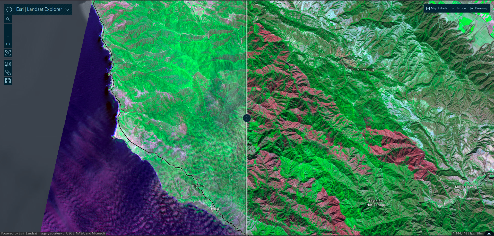
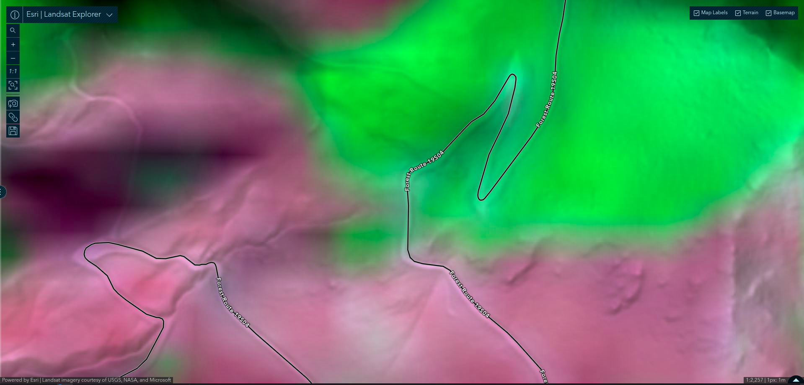
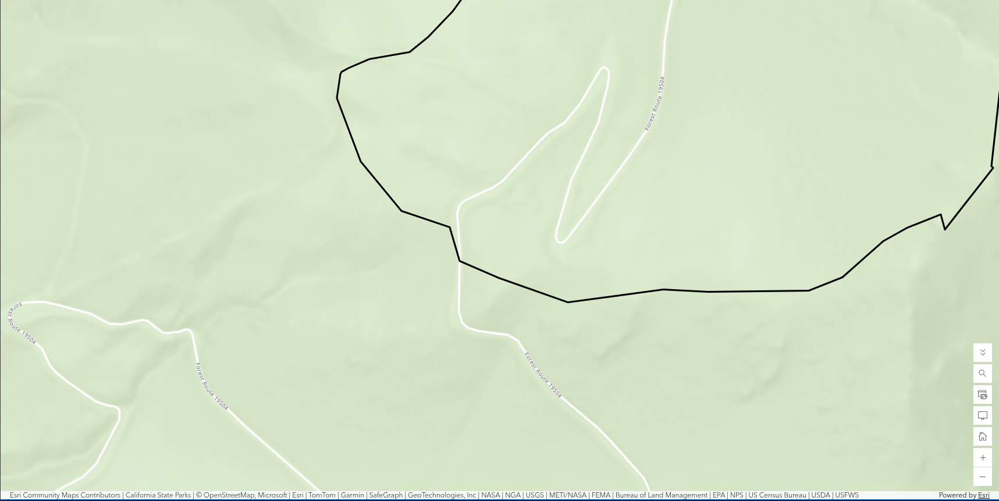
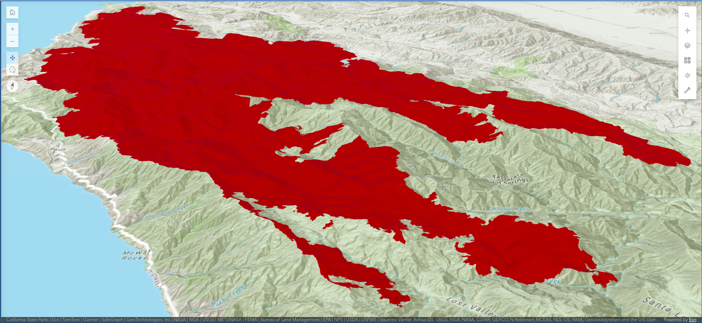
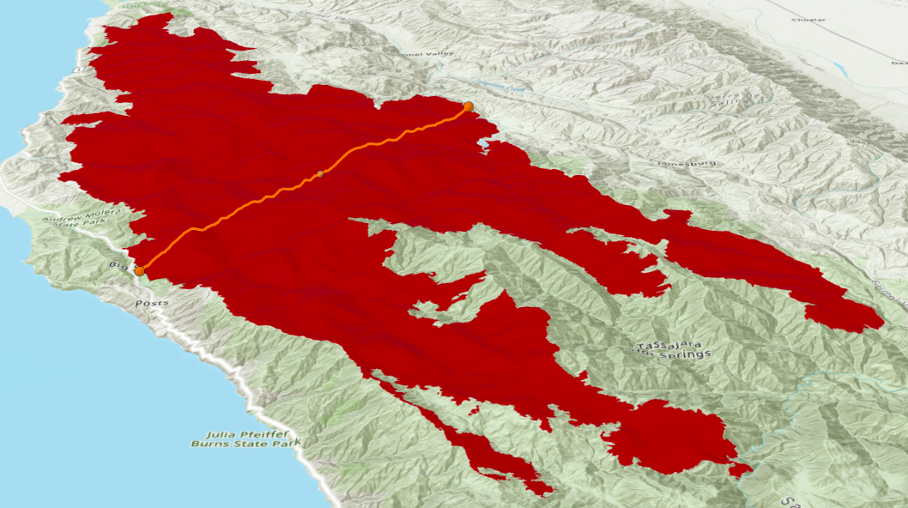
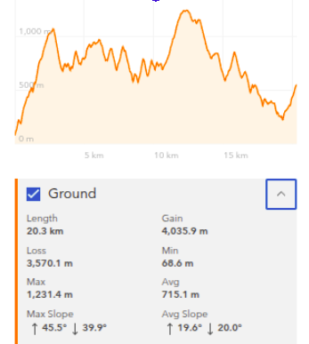
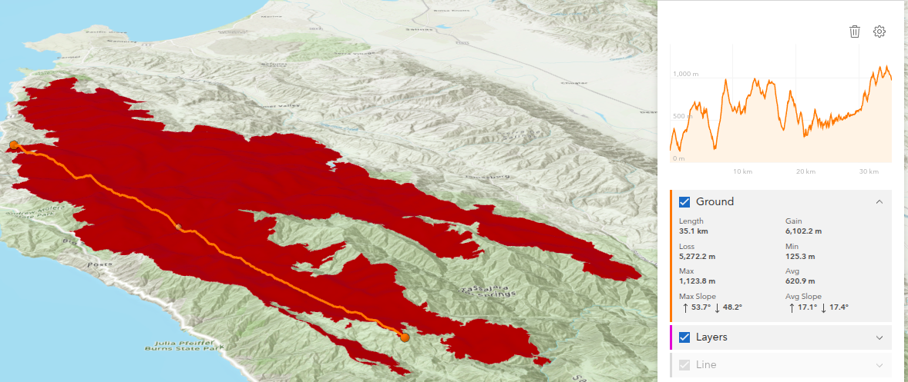

Lab 3 · October 2026
One perimeter, three answers: Projection, resolution, and elevation across the Soberanes Fire
The question
How much total land area burned within the perimeter of the 2016 Soberanes Fire in the Santa Lucia Range of Monterey County, California, when measured across different coordinate reference frames, raster sensor resolutions, and topographic slopes?
The data
Three public datasets and web services were analyzed in this workflow:
- Burn perimeter vector layer: Published by Esri as
Soberanes_Perimeter. Checking the raw service definition metadata (spatialReference) reveals it is projected in EPSG:3857 (WGS 84 / Pseudo-Mercator) with linear units in meters. It comes with a precalculatedShape__Areaof 824,638,033.81 m² and aShape__Lengthof 556,807.89 m. Topological analysis of the service geometry reveals 690 rings (755 when delivered in Web Mercator), of which 686 rings are smaller than 900 m², the footprint of a single 30 m Landsat cell. - Satellite raster archive: Landsat 8–9 operational multispectral surface reflectance imagery accessed via the Esri Landsat Explorer. The fire progression was verified by comparing pre-fire acquisition on 20 June 2016 against post-containment acquisition on 26 October 2016 (both from the same orbit track with under 5% cloud cover) rendered in Short-wave Infrared at a ground cell resolution of 30 meters.
- Terrain elevation surface: The Esri World Elevation Surface accessed through ArcGIS Scene Viewer to drape the perimeter and compute transverse slope profiles across the Santa Lucia topography.
The method
To quantify how coordinate systems and physical models dictate area measurement, I evaluated the perimeter across three separate movements:
- Coordinate frame comparison: Evaluated planar Cartesian calculation against geodetic calculation on the WGS 84 ellipsoid directly inside Map Viewer using this Arcade pop-up attribute expression:
// Two ways to measure one polygon. var planar = Area($feature, 'square-kilometers'); var globe = AreaGeodetic($feature, 'square-kilometers'); var acres = AreaGeodetic($feature, 'acres'); return 'planar ' + Round(planar, 3) + ' km2' + TextFormatting.NewLine + 'geodetic ' + Round(globe, 3) + ' km2' + TextFormatting.NewLine + 'geodetic ' + Round(acres, 0) + ' acres' + TextFormatting.NewLine + 'ratio ' + Round(planar / globe, 4); - Sensor resolution sensitivity: Traced vector boundaries against Landsat pixels to calculate the uncertainty band (± perimeter × cell size) across four satellite sensor resolutions (10 m Sentinel-2, 30 m Landsat, 250 m MODIS, and a 500 m global product).
- Topographic slope and vertical datums: Generated two topographic elevation cross-sections in Scene Viewer across the steepest flanks of the burn scar, scaling 2D planimetric shadow area to 3D surface area using the planar correction factor 1 / cos(θ). In addition, ellipsoidal GPS height (h = 900 m) was transformed to orthometric height (H = h − N) using geoid undulations (N) derived from three global geopotential gravity models (EGM2008, EGM96, and EGM84) via GeographicLib.
The map
Interactive Map Viewer
Interactive 2D web map: Open Soberanes Map Viewer in ArcGIS Online.
Interactive Scene Viewer (3D Terrain)
Interactive 3D scene: Open Soberanes Terrain Scene in Scene Viewer.
Figure 1: Pre- and post-fire swipe

Figure 2 & Figure 3: Cell grid vs. vector boundary


Figure 4: 3D Terrain and elevation slope profiles




What I found
Areas measured geodetically on the WGS 84 ellipsoid.
Source geometry stored in EPSG:3857 (Web Mercator);
planar areas in that frame are inflated by sec^2(phi)
and are reported here only for comparison.1. The Frames Table
| Frame | Area (km²) | How you got it |
|---|---|---|
| Web Mercator, planar | 824.323 | Shape__Area and Area() |
| WGS 84 ellipsoid, geodetic | 533.891 | AreaGeodetic() |
| Your hand-traced polygon | 564.460 | Measurement tool |
| The published incident figure | 534.699 | 132,127 acres converted by you |
| UTM zone 10N, planar | 533.929 | Given, computed for you |
| California Albers, planar | 534.182 | Given, computed for you |
Areal distortion prediction vs. observation: At latitude φ = 36.326°, the theoretical Web Mercator areal scale factor is sec²(36.326°) = 1 / cos²(36.326°) ≈ 1.5406 (+54.06% inflation). The ratio of planar area to geodetic area returned by Arcade is 824.323 / 533.891 ≈ 1.5440. They agree to within two parts in a thousand. Web Mercator invents over 290 km² of non-existent burned land simply through projection choice.
2. Sensitivity Table: Web Mercator Inflation by Latitude
| Place | Latitude | Web Mercator areal inflation (sec²φ − 1) |
|---|---|---|
| Equator | 0.000° | 0.00% |
| Gibson Desert, Western Australia | −23.285° | 18.52% |
| This campus, Pudong | 31.162° | 36.57% |
| Madeira, Portugal | 32.750° | 41.37% |
| Soberanes Fire, California | 36.326° | 54.06% |
| Fairbanks, Alaska | 64.840° | 453.25% |
3. Sensitivity Table: Sensor Grid Uncertainty Bands
Using the geodetic perimeter (P = 441.955 km) and geodetic area (A = 534.182 km²):
| Sensor | Cell size | Uncertainty band (P × cell) | As a share of the area |
|---|---|---|---|
| Sentinel-2 | 10 m | 4.420 km² | 0.8% |
| Landsat 8–9 | 30 m | 13.259 km² | 2.5% |
| MODIS | 250 m | 110.489 km² | 20.7% |
| Coarse global product | 500 m | 220.977 km² | 41.4% |
4. Topographic Surface Slope Correction
Planimetric area represents only the horizontal ground shadow. Computing true 3D surface area across mountain topography requires scaling by 1 / cos(θ):
- Profile 1 (steepest cross-section): Average slope θ = 20.0° → 1 / cos(20.0°) = 1.0642 (+6.4% ground surface) → 534.182 × 1.0642 ≈ 568.48 km² (140,474 acres).
- Profile 2 (longitudinal transect): Average slope θ = 17.4° → 1 / cos(17.4°) = 1.0479 (+4.8% ground surface) → 534.182 × 1.0479 ≈ 559.77 km² (138,322 acres).
Because Jensen's inequality guarantees that the average of 1 / cos(θ) is always strictly greater than 1 / cos(average θ), this range establishes that at least 560 to 568 km² of actual physical terrain was burned by the fire.
5. Vertical Datum and Geoid Separation Table
Geoid undulation (N) computed across three global geopotential gravity models from GeographicLib:
| Point | EGM2008 (m) | EGM96 (m) | EGM84 (m) | Spread (m) |
|---|---|---|---|---|
| Soberanes Fire (36.3262°, −121.7218°) | −32.9779 | −34.0791 | −34.7582 | 1.78 m |
| This campus, Pudong (31.1622°, 121.5545°) | +12.1533 | +11.4482 | +11.6075 | 0.71 m |
| Mount Everest (27.9881°, 86.9250°) | −28.4939 | −28.7408 | −30.4587 | 1.96 m |
Height conversion (h → H): For a GPS receiver reporting ellipsoidal height h = 900.00 m at the fire perimeter, the true orthometric height above the gravity geoid is:
- Under EGM2008: H = h − N = 900 − (−32.9779) = 932.98 m
- Under EGM96: H = 900 − (−34.0791) = 934.08 m
- Under EGM84: H = 900 − (−34.7582) = 934.76 m
Published number recommendation: For official fire suppression and policy reporting, I would publish 534.18 km² (132,000 acres) in an equal-area planar projection (California Albers Teale, EPSG:3310) or geodetically on the WGS 84 ellipsoid. If trusted without verification, the layer's uncorrected Web Mercator Shape__Area field reports 824.64 km², which overstates the burned land by 54.4% (+290.46 km²).
What this does not show
- Coastline paradox and resolution limits on perimeter: While the geodetic area of 534 km² is robust to scale variations, the layer's reported perimeter of 556.8 km (planar) / 441.9 km (geodetic) is an artifact of raster vectorization. With an isoperimetric ratio of 4πA / P² ≈ 0.034, over 80% of segment edges are shorter than 30 m, and 686 interior sliver rings are smaller than a single Landsat pixel (900 m²). Generalizing the boundary to the sensor's genuine 30 m resolution truncates perimeter length by over 6% while shifting area by under 0.05%.
- Slope corrections are lower bounds: The 3D surface area calculation (+4.8% to +6.4%) assumes average planar slopes across linear profiles. Because real topography is fractured into ravines and cliffs where steep facets expand surface area exponentially faster than flats diminish it, actual ground surface burned is strictly larger than these estimates.
- Gravity geoid uncertainty: Ellipsoidal GPS heights cannot model post-fire hydrologic runoff, debris flows, or sediment transport because water flows strictly down the geopotential gradient of the geoid. The 1.78 m model spread between EGM2008 and EGM84 represents an unresolved vertical datum ambiguity that can skew watershed flow routing.
Reflection and AI-usage
The written reflection addressing the published figure, error rank reversal conditions and affected financial/policy parties, along with the AI-usage disclosure, has been submitted through Brightspace.
← Back to all labs